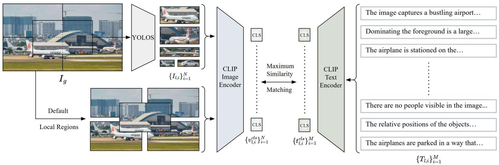

Figureure 3 · Overview of Token Similarity based Learning (TSL)Fig. 3. Overview of Token Similarity based Learning (TSL). The framework processes global image-text pairs and their local pairs through shared CLIP encoders, extracting patch and sequence tokens. TSL identifies and projects corresponding token regions to match local CLS embeddings, enabling attention on local element.这张图概括 FAST-GOAL 的整体方法流程。阅读时先看模块之间传递的训练信号，再看作者如何把目标拆成可优化的子问题。

Figureure 2 · Overview of Fast Local Image-Sentence Matching (FLISM) pipelineFig. 2. Overview of Fast Local Image-Sentence Matching (FLISM) pipeline. Given a global image and its detailed caption, FLISM uses YOLOS [35] to detect objects in the image to create local regions and splits the caption into individual sentences. These local pairs are then processed through CLIP encoder to obtain CLS embeddings, which are used for maximum similarity matching to identify the most relevant image-sentence pairs.这张图概括 FAST-GOAL 的整体方法流程。阅读时先看模块之间传递的训练信号，再看作者如何把目标拆成可优化的子问题。
核心问题
如果要跟踪 CLIP/SigLIP 后续对齐路线，这篇是“全局-局部对象对齐”方向的可读样本。
方法拆解
Fast Local Image-Sentence Matching 提取局部图像区域并匹配句子，Token Similarity-based Learning 对齐图像 patch token 与区域文本 embedding；同时构建 GLIT100k。